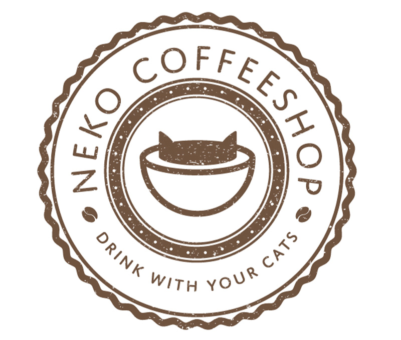
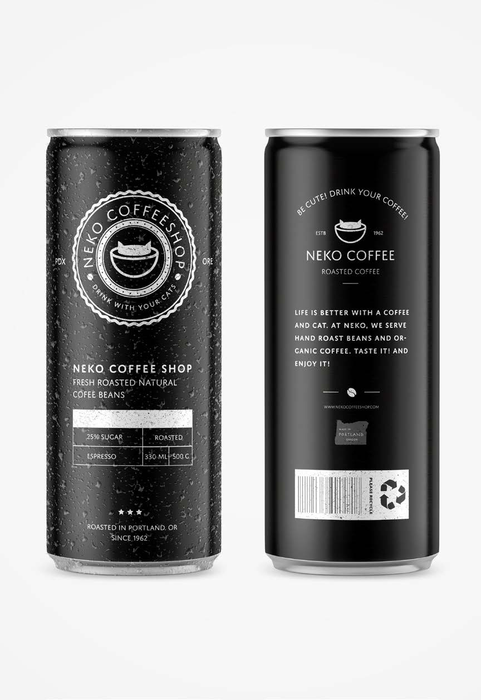
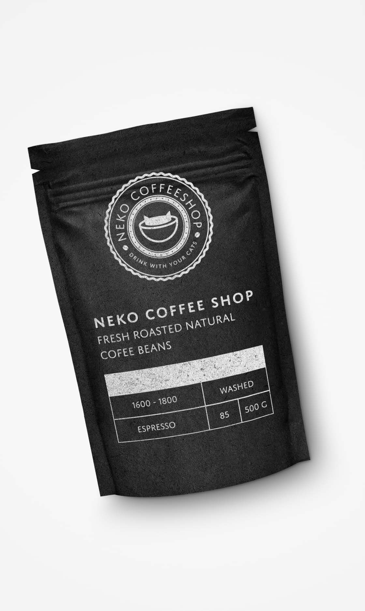
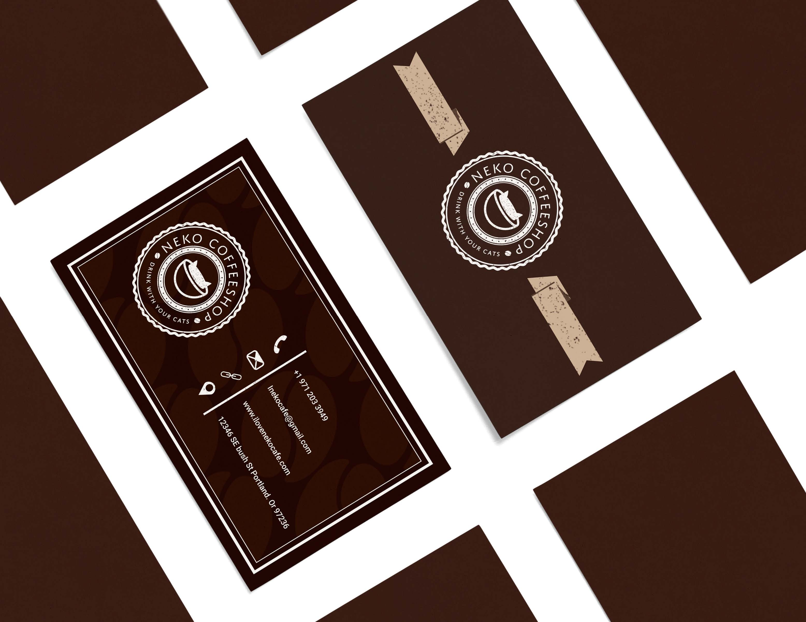
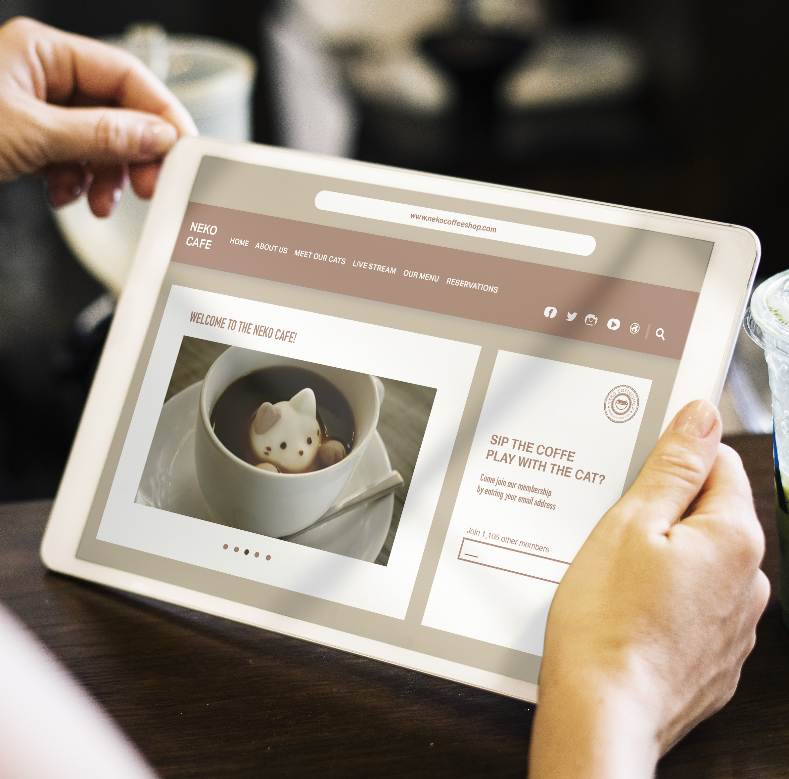
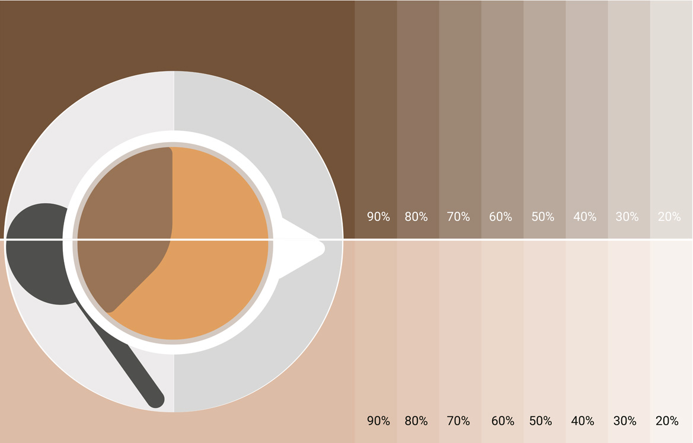

03
To focus on logos, identity systems, patterns
and create the visual hallmarks of wonderful
brands. Have you heard of “Cat Cafe”?
It might sound a bit weird but it’s literally
the place you can enjoy drinking and playing
with/watching cats at the same time! cat cafes
are becoming more popular. All ages are
welcome to join the Neko party and share
the experience of coffee and cat. You can
play with them, cuddle with them, nap with
them, take a picture with them, and if you fall
in love, you can hang out with them!


  